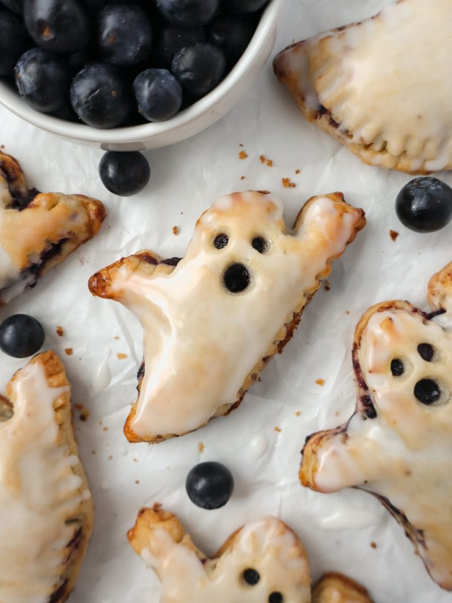

Booberry Hand Pies

Description
These Booberry Hand Pies are a fun Halloween treat! With a flaky crust and sweet blueberry filling, they're a perfect dessert for any spooky celebration.
Ingredients
- Buttermilk Pie Crust
- 2 ½ cups flour
- 2 tbsp sugar
- ½ tsp salt
- 1 cup cold unsalted butter, cubed
- ½ cup buttermilk
- Blueberry Filling
- 1 ½ cups blueberries
- ¼ cup sugar
- 1 tbsp lemon juice
- ⅛ tsp salt
- 1 tbsp cornstarch mixed with 1 tbsp water (slurry)
- Vanilla Icing
- ⅓ cup powdered sugar
- 1 tbsp milk
- ⅛ tsp vanilla extract
- Egg Wash
- 1 egg, beaten with 1 tbsp milk
Steps
- In a large bowl, mix flour, sugar, and salt. Add cold butter cubes and blend until crumbly.
- Gradually mix in buttermilk until dough is rough. Divide into two discs, wrap in plastic, and refrigerate for at least 1 hour.
- In a pot, cook blueberries, sugar, lemon juice, and salt over medium heat until bubbling. Stir in a cornstarch slurry until thickened. Let cool.
- Preheat oven to 400°F and line baking sheets with parchment. Roll one dough disc to about ⅛ inch thick on a floured surface.
- Cut ghost shapes, place on baking sheets, and chill. Repeat with the second disc. Then, spoon about ½ tbsp blueberry filling onto half of the ghost shapes.
- On the remaining ghosts, cut out eyes and a mouth. Place these on top of filled ghosts and crimp edges with a fork. Brush with egg wash and chill for 15 minutes.
- Bake pies at 400°F for 25 minutes, until golden. Cool, then mix powdered sugar, milk, and vanilla for icing, and brush over cooled pies.
Back